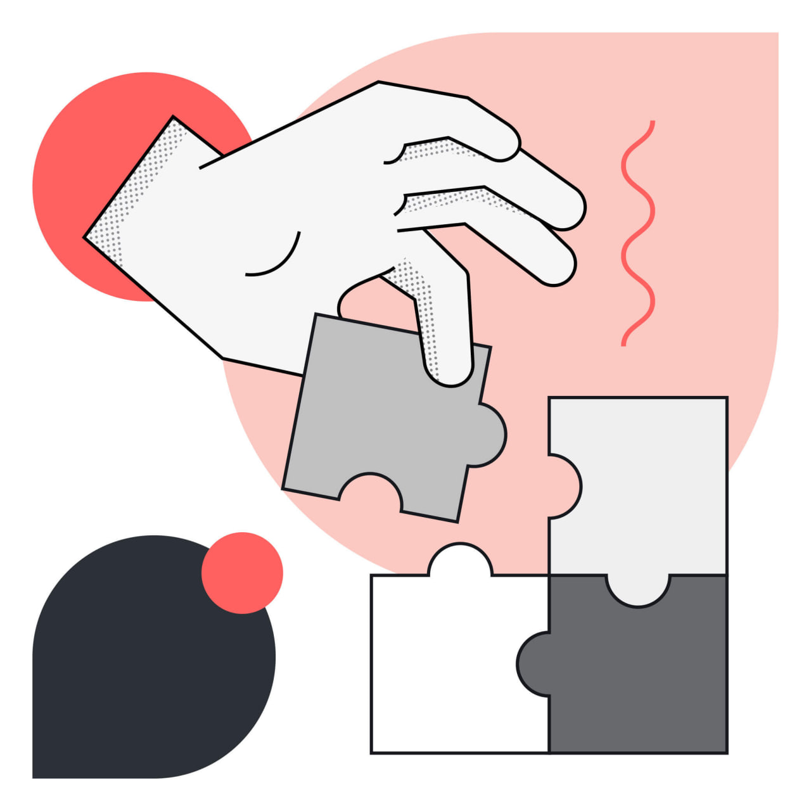
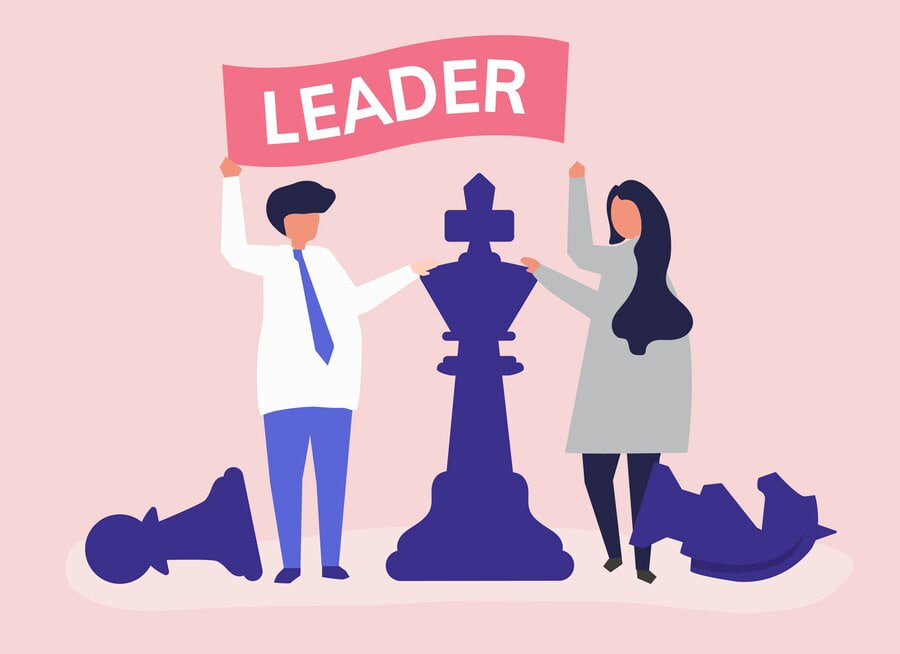

🔍My Skills
Computer Skills
- Microsoft Office Suite: Proficient in Word, Excel, and PowerPoint.
- Web Development: Knowledge of HTML,CSS and a beginner level of JavaScript for website development.
Communication Skills
- Written Communication: Strong writing skills, including technical writing, report writing, and email communication.
- Active Listening: Skilled listener who actively engages in conversations and understands the needs of others.
- Interpersonal Skills: Ability to build and maintain positive relationships with colleagues and clients.

Problem Solving Skills
- Critical Thinking: Ability to analyze complex problems and identify creative solutions.
- Strong analytical skills for data analysis and problem diagnosis.
- Decision-Making: Ability to make informed decisions under pressure.

Leadership Skills
- Team Leadership: Experience leading teams and motivating others to achieve goals.
- Mentorship: Ability to mentor and coach team members.